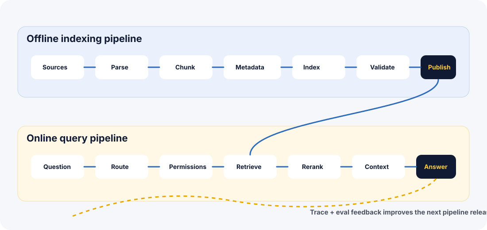

Treating ingestion as a one-time script
Symptom: the product silently serves old or partially parsed content.
Better move: treat indexing as a versioned release pipeline with validation and rollback.
A RAG system is not one prompt and one search call. It is an execution pipeline: a sequence of controlled steps that prepare knowledge, answer users, handle weak evidence, and leave traces engineers can debug.
A beginner RAG explanation often says: retrieve, then generate. That is useful as a first mental model, but it is too small for production. Real systems ingest documents, parse files, clean text, chunk content, enrich metadata, build indexes, validate freshness, route queries, retrieve candidates, rerank evidence, assemble context, generate answers, attach citations, apply safety rules, log traces, and run evals.
Execution pipelines are how we stop treating those steps as magic. A pipeline names the stages and makes each stage accountable.
A restaurant does not start cooking only when the customer orders. Ingredients are selected, washed, chopped, labeled, stored, and checked before service begins. Then, during service, the chef reads the order, chooses the station, cooks, plates, checks quality, and sends the dish out.
RAG works the same way. The offline pipeline prepares the knowledge ingredients. The online pipeline handles the live user order. If the ingredients are stale or mislabeled, the chef cannot fix everything at the plating step.
Prep kitchen -> Offline indexing pipeline
Clean ingredients -> Parse, clean, chunk, enrich metadata
Service order -> Online user query
Chef station -> Router / retrieval strategy
Quality check -> Grounding, citation, refusal, eval
Service log -> Trace, metrics, feedback loopThe offline pipeline prepares knowledge before any user asks a question. This is where production quality often starts or fails.
A document is updated, but the index still serves the old version. The assistant cites a real source, but the source is stale.
Parse failure rate, chunk coverage, stale-source rate, embedding/index build time, and validation pass rate.
A bad index can break answers without any application code changing. That is why production RAG treats indexing like a release: build, validate, compare, publish, monitor, and roll back if quality drops.
The online pipeline runs when a user asks a question. It should be fast, safe, and traceable.
Detect intent, missing details, risk level, domain, route, and whether clarification is needed before retrieval.
Choose source order, trim noise, preserve citations, and separate trusted evidence from user instructions.
The model should not always answer. Some requests need clarification, escalation, or refusal when evidence is weak.
Record route, filters, sources, scores, prompt version, answer status, latency, cost, and feedback.
A pipeline contract defines what each stage accepts, returns, and guarantees. Without contracts, every stage becomes informal glue code.
{
"request_id": "req_1042",
"index_version": "policies_2026_07_09",
"route": "corrective_policy_rag",
"risk": "high",
"filters": {"region": "EU", "role": "contractor"},
"retrieved_sources": ["access_policy_v4", "sev1_runbook_v2"],
"reranked_sources": ["sev1_runbook_v2", "access_policy_v4"],
"answer_status": "escalated",
"refusal_reason": null,
"latency_ms": 914,
"cost_estimate": 0.0062
}Production pipelines need planned behavior for weak evidence, missing sources, bad permissions, slow retrieval, model timeout, and low confidence. A fallback is not an apology after failure. It is part of the design.
The system should choose answer, ask clarification, retry retrieval, refuse, escalate, or open a human-review path.
Rewrite the query, broaden search, ask for missing details, or escalate if the risk is high.
Do not retrieve or summarize unauthorized documents. Explain the access issue without leaking content.
Block launch if retrieval recall, citation support, refusal accuracy, or route accuracy falls below threshold.
Block final answers when retrieved evidence is missing, stale, unauthorized, contradictory, or below confidence threshold.
Escalate high-risk decisions such as security, legal, healthcare, finance, or customer-impacting actions.

Offline:
documents -> parser -> cleaner -> chunker -> metadata -> index -> validation -> published version
Online:
user -> router -> permissions -> retriever -> reranker -> context builder -> model -> answer policy -> trace
Feedback:
logs -> evals -> failure analysis -> pipeline improvementA security engineer asks, "Can a contractor access EU customer logs during Sev1?" The pipeline must apply role and region filters, retrieve both the access policy and incident runbook, verify permissions, and escalate if evidence is incomplete.
Cache stable low-risk answers, retrieval candidates, or embeddings carefully. Do not reuse answers across users when permissions, role, region, or source freshness can change the result.
Online query execution is usually synchronous because the user is waiting. Ingestion, index validation, eval runs, and feedback analysis are usually asynchronous jobs.
Query rewriting can improve recall, but log both the original and rewritten query so failures can be debugged and evals can compare win/loss behavior.
Use cheaper paths for simple questions and stronger paths for high-risk requests. Track cost by route, not only total model spend.
Choose one assistant: HR policy, security runbook, customer support, developer docs, or sales enablement. Write its offline pipeline, online pipeline, required trace fields, fallback rules, and three release gates.
Next, test the pipeline concepts in the quiz, then build a pipeline trace simulator in the exercises and project.